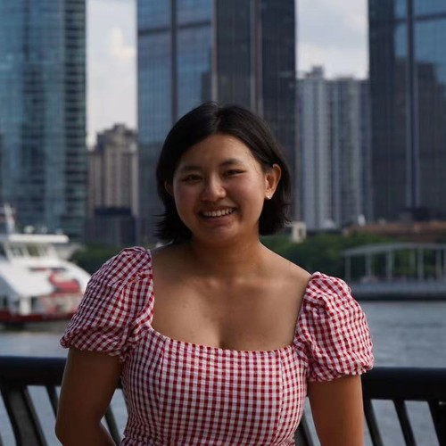
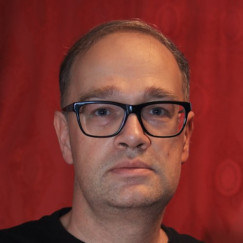

Fee
€100 per participant, booked and paid in the ISFV22 registration. The short course is not included in the conference fee.
ISFV22 closes with short courses on the afternoon of Thursday, 15 July 2027. Given by invited experts, they offer participants the opportunity to go deeper into selected topics in flow visualization at the end of the symposium.
Short-course lecturers
Four short courses, each given by an invited lecturer. The lecturers, topics and detailed programme are announced here as they are confirmed.

Short course
Universidad Carlos III de Madrid, Spain
Data-Driven Reduced-Order Models from Flow Measurements: A Hands-On Introduction

Short course
Lomonosov Moscow State University, Russia
Background Oriented Schlieren – patterns and image processing techniques
Short course
Lecturer and topic will be published once confirmed.
Short course
Lecturer and topic will be published once confirmed.
The event
The short courses take place on Thursday, 15 July 2027, in the afternoon, after the technical sessions and the closing session of ISFV22. Social activities run in parallel for those who do not attend a course.
Participation
Short courses are booked in the conference registration. Early-bird registration is open until 31 March 2027 and registration closes on 15 June 2027. See Registration.
Select the short course when you register. The fee of €100 is paid together with your registration.
€100 per participant, booked and paid in the ISFV22 registration. The short course is not included in the conference fee.
Short courses are open to registered ISFV22 participants, including students.
Questions about the short courses can be addressed to isfv22@uc3m.es.
Flow visualization